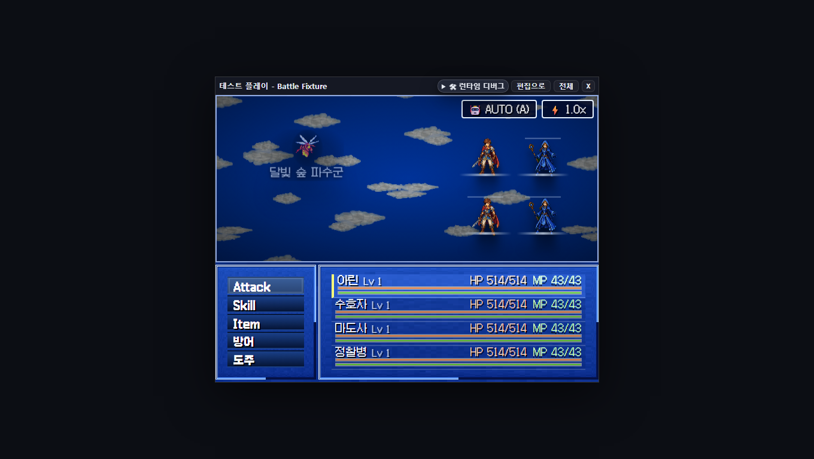
RM2003 5/10
가장 안정적이지만 바코드형 상태창과 혼합 언어가 발목을 잡는다.
RPG ZZU의 전투 화면은 “고전 JRPG”라는 말로 너무 많은 결함을 면책하고 있다. 현재 결과물은 레트로가 아니라 서로 다른 시대의 UI 규칙이 한 DOM 위에서 충돌하는 프로토타입이다.
“플레이어가 무엇을 보고, 무엇을 조작하며, 지금 누구의 차례인지”보다 “이 엔진이 가진 기능을 얼마나 많이 화면에 올릴 수 있는지”가 우선된 UI다.
2026-07-30 현재 소스를 기존 결정적 전투 픽스처로 실행한 1360×768 전체 화면. 전투는 보이지만 화면을 지배하지 못하고, 플레이어의 시선은 작은 무대 안에서 다시 다섯 영역으로 갈린다.
화면은 첫 항목에 선택 강조를 보여 주지만, 실제 ArrowUp/Down/Left/Right 처리는 타깃 선택 단계에서만 작동한다. 명령 단계에서 Z/Enter는 무조건 공격으로 진입한다. 고전 JRPG 문법을 시각적으로 약속하고 입력 계약은 지키지 않는, 가장 위험한 신뢰 훼손이다.
src/player/battleDom.ts:285–299, :336. 상태 메뉴에는 방향키 모델이 있는데 전투 메뉴에는 없다.타깃은 스프라이트 브래킷, 상단 메시지 두 줄, “대상:” 프롬프트, 별도 적 버튼에서 반복된다. 중복 확인은 안전성이 아니라 시선 이동 비용이다. 단일 적 전투에서도 플레이어는 이미 보이는 적을 다시 목록에서 골라야 한다.
포켓몬·드래곤퀘스트·RM2003·MV는 전투 카메라, 파티 표현, 명령 위치가 본질적으로 다르다. 그런데 현재는 공통 DOM에 CSS와 좌표만 바꾼다. 그 결과 MV는 실제로 적 중앙 포인터가 다른 요소에 가려지고, 몇몇 스킨은 이름만 바뀐 파란 패널이 된다.
battleDom.ts의 공통 append 순서 + registry.ts 12 프리셋. MV diag: enemyPointerBlocked=true.Attack/Skill/Item과 방어/도주가 섞인다. “AUTO”, “ATB”, “Lv”, HP/MP도 설명 없이 공존한다. 로컬라이즈 실패는 미관 문제가 아니라 빠른 전투 판단을 방해하는 인지 부채다.
자동 진단은 대부분 overflowX=0, overflowY=0이라 통과한다. 그러나 MV 스크린샷은 글자가 겹치고 포인터가 차단된다. “박스 밖으로 안 나갔다”는 “읽을 수 있다·클릭할 수 있다”가 아니다.
게이지가 누구에게나 반복되지만 다음 행동 순서, 대기/활성 모드, 적의 준비 상태를 해석할 수 없다. 장식 막대는 많고 의사결정 정보는 적다.
두 버튼은 항상 우상단에 떠 있고, AUTO를 켜면 배속까지 1.8×로 자동 변경된다. 서로 다른 두 설정을 묵시적으로 결합하고, 어느 스킨에서도 자연스럽게 통합되지 않는다.
battleDom.ts:131–166.전체 화면 버튼이 있지만 기본 캡처는 작은 창과 대형 레터박스다. 전투 화면을 평가하고 튜닝해야 하는 에디터에서, 전투가 가장 작은 피사체가 되는 것은 자기모순이다.
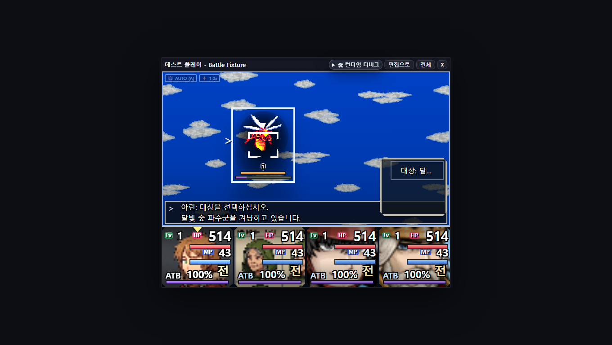
123“달빛 숲 파수군을 겨냥하고 있습니다”는 이미 브래킷으로 보인다. 우측 메뉴의 적 이름도 같은 정보를 반복한다. 이 중복은 다중 적일 때 더 나빠진다. 필드와 목록 사이를 오가며 동일성을 확인해야 하기 때문이다.
모든 이미지는 같은 픽스처의 명령 단계다. 배경과 패널색은 달라지지만, AUTO·배속·5개 명령·4인 상태의 의미 구조가 대부분 그대로 따라다닌다.

가장 안정적이지만 바코드형 상태창과 혼합 언어가 발목을 잡는다.
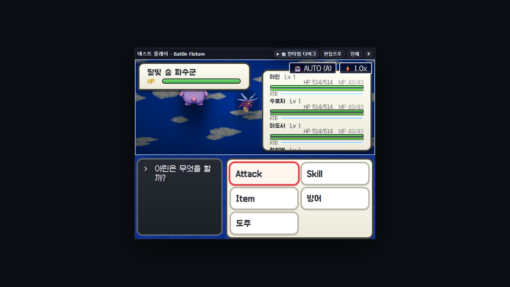
포켓몬식 박스와 4인 JRPG 파티가 같은 화면에서 세계관을 다툰다.
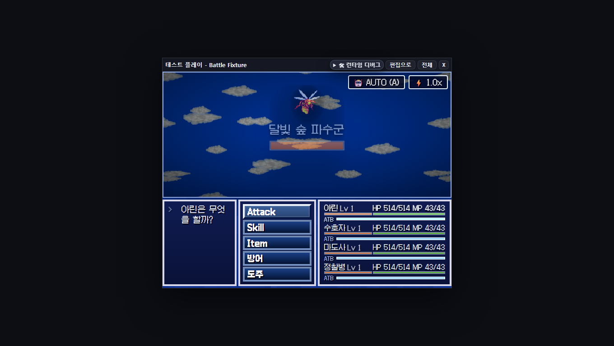
프론트뷰라기보다 공통 HUD의 파란 재배치에 가깝다.
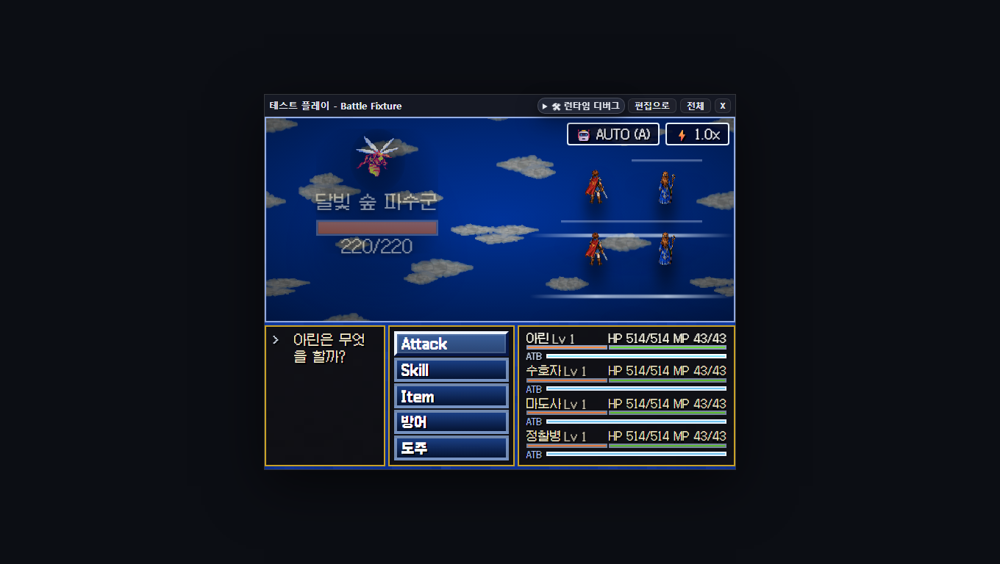
HD-2D의 깊이·브레이크 문법 없이 배경 톤만 차용한다.
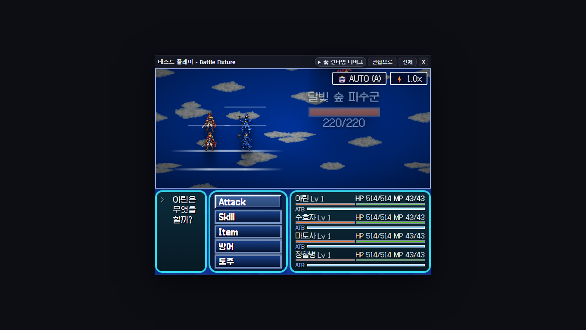
능동형 배치를 표방하지만 하단 고정 HUD가 심리스 감각을 끊는다.
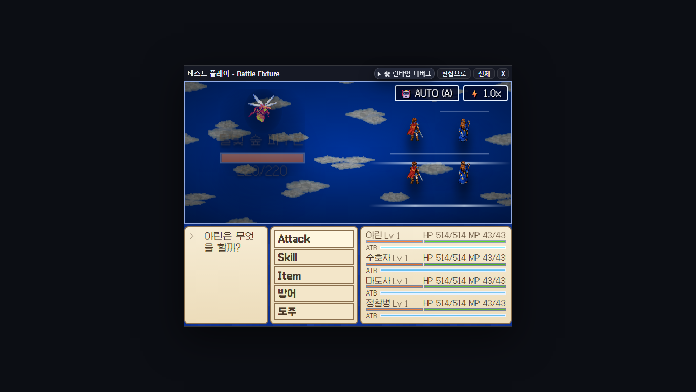
BP/Default의 판단 구조 없이 회화풍 배경과 미니멀 프레임만 남았다.
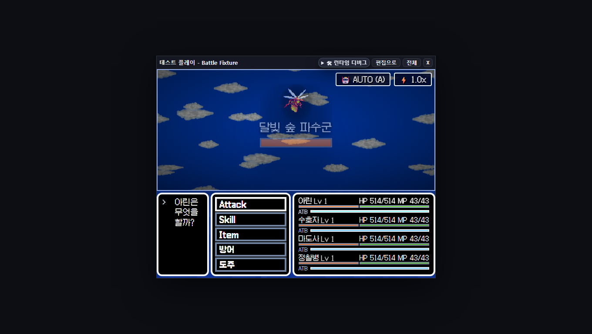
1인칭 적 배치와 4인 ATB 행이 장르 문법을 서로 상쇄한다.
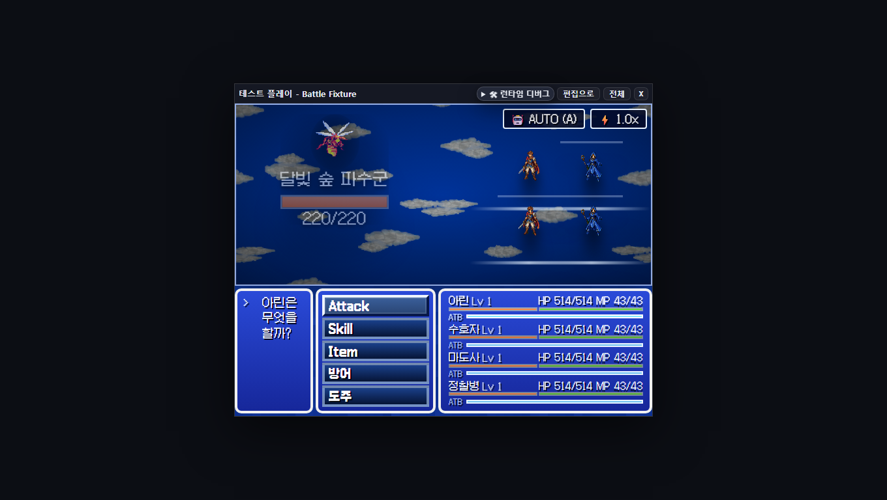
공통 DOM과 가장 잘 맞지만 RM2003과 차이는 장식 수준이다.
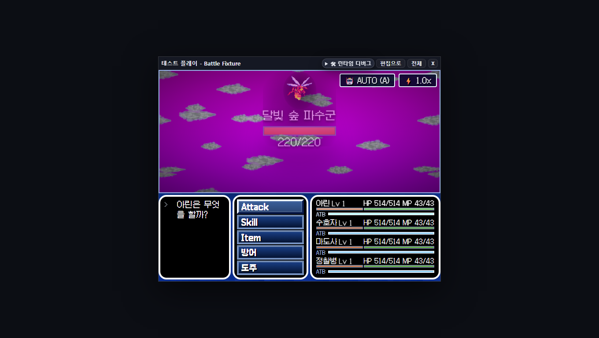
마젠타 배경은 강하지만 롤링 HP·리듬·텍스트 전투의 정체성은 없다.
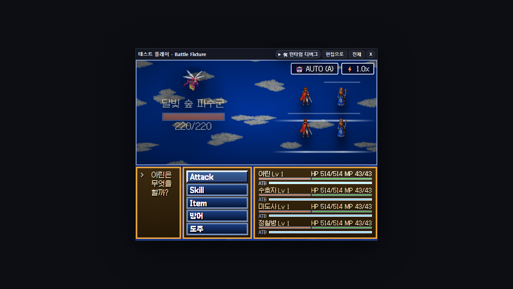
저앵글 카메라보다 하단 공통 HUD가 더 강하게 기억된다.

명령·상태 텍스트가 실제로 겹친다. 진단상 적 포인터도 차단된다.
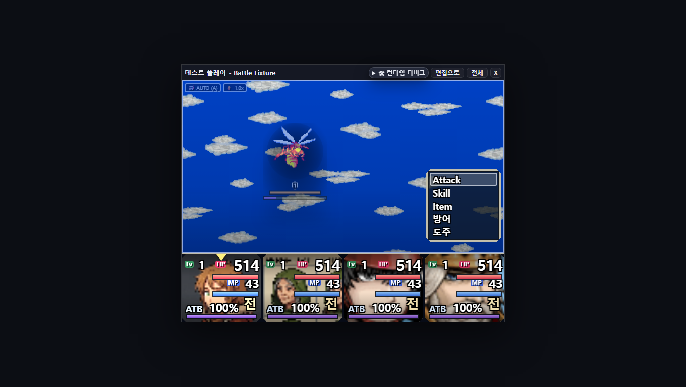
차별화는 크지만 거대 얼굴 카드가 전투보다 HUD를 주인공으로 만든다.
| 스킨 | overflow | 포인터 차단 | 실제 판정 |
|---|---|---|---|
| RM2003 | 0 × 0 | false | 기하학상 정상, 정보 위계·언어 혼합은 실패 |
| Pokémon | 0 × 0 | false | 클릭 가능하지만 4인 파티와 포켓몬 문법 충돌 |
| Chrono | 0 × 0 | false | 박스는 맞지만 ‘active/ring’의 실제 상호작용 없음 |
| Mother | 0 × 0 | false | 클리핑 없음, 스킨 정체성은 배경색에 과의존 |
| VX Ace | 0 × 0 | false | 클릭 가능, 초상·숫자 우선순위 과도 |
| MV | 0 × 0 | true | 텍스트 중첩 + 적 중앙 포인터 차단 |
현재 소스로 rm2k3-battle-layout-ux.spec.ts를 재실행했을 때 전투는 렌더됐지만 두 테스트 모두 오래된 [data-testid='battle-actor-actor_hero'] 가정 때문에 실패했다. 즉 시각 회귀 게이트 자체가 현재 DOM 계약과 어긋나 있다.
실행: npx playwright test test/e2e/rm2k3-battle-layout-ux.spec.ts --project=chromium → 2 failed.
전투 단계가 dataset으로 노출되고, 적·명령·결과에 테스트 ID가 있으며, 결정적 픽스처와 스킨별 캡처 루프가 있다. 문제는 증거 인프라 부재가 아니라 검증 기준이 박스 기하에 치우친 것이다.
docs/battle-ui-critique-assets/01-current-command.png, 02-current-target.pngoutput/evidence/battle-skins/<skin>/02-command.png 12종diag.json의 overflow·pointer-blocked·sprite rectsrc/player/battleDom.ts, battleCommandDom.ts, battleFieldDom.ts, battleDirectorDom.tssrc/styles/runtime/battle.css, battle-skins/_rm2003.css 및 스킨별 CSSsrc/battle/skins/registry.ts — 12개 id, 4개 layout 계열, 4개 HUD 힌트battle.css:61–62의 640×480, RM2003 HUD _rm2003.css:13의 192px